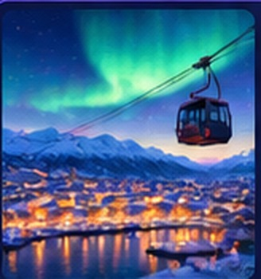
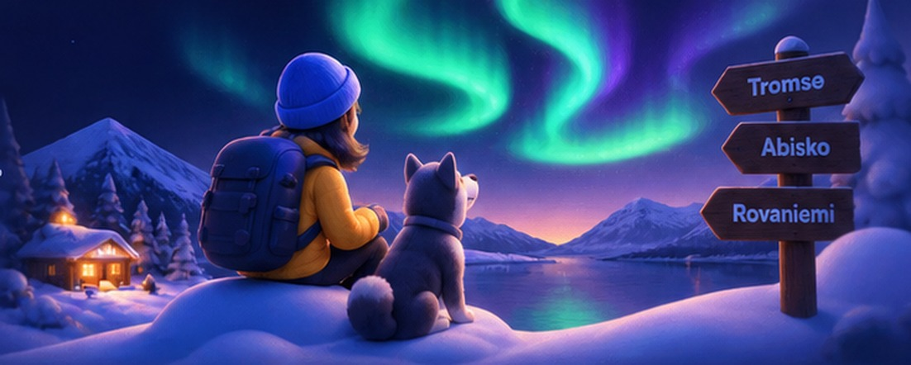
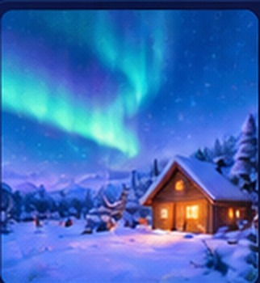
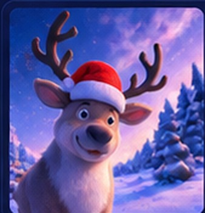
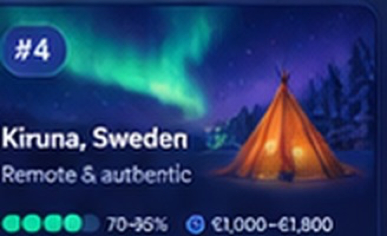
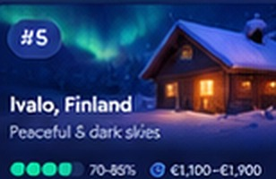
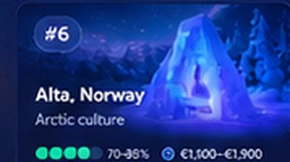
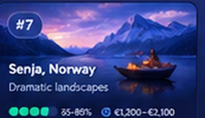
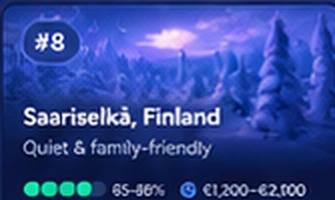

Best overallView plan →
Tromsø, Norway 🇳🇴
The complete Arctic experience
✧Aurora chance9.4/10
✈From Berlin~3h direct
◉Typical cost€2,050–2,450 / 2
Snow, silence, and a sky that puts on a show. Here’s your complete guide to seeing the Northern Lights from Berlin — with real recommendations, realistic budgets, and recent traveler insights.

The best balance of aurora chances, experience, and travel ease — from Berlin.



Same shortlist, scored on what actually differs — pick the row that matters most to you.
| Out of 10 | 🇳🇴 Tromsø | 🇸🇪 Abisko | 🇫🇮 Rovaniemi |
|---|---|---|---|
| Natural aurora odds | 9.5 | 10 | 8.5 |
| DIY viewing (no tour needed) | 7 | 10 | 7 |
| Guided chase quality | 10 | 8.5 | 8.5–9 |
| City life & restaurants | 10 | 3 | 8 |
| Berlin flight access | 9 | 6 | 10 |
| Value for money | 7.5–8 | 9.5 | 9.5 |
| Still great if aurora fails | 10 | 6.5 | 8.5 |
| Best for | Best overall holiday | Aurora is priority #1 | Budget & easy logistics |
Itineraries, stays, tours, trade-offs and what to avoid.
Recent traveler reports validate Tromsø’s key advantage: good operators really do drive for hours — sometimes into Finland — to escape coastal cloud. If you want the strongest recovery plan when weather is bad, Tromsø wins.
| Flights BER ↔ TOS | €550–650 |
| Eurowings direct · ~3h15m (e.g. EW8240 06:15→09:30) | |
| 5 nights budget hotel/apartment | €550–750 |
| Organised aurora chase Chasing Lights / Northern Horizon / Wandering Owl | €350–420~€175–210 / person |
| Husky or reindeer sledding (2–4h) | €340–460~€170–230 / person |
| Food + buses | €340–410 |
The rain-shadow “blue hole” is the differentiator. Recent travelers repeatedly report seeing their best aurora simply outside STF or in the village, which means you don’t need to buy a tour every night.
| BER ↔ Kiruna + Abisko ground | €520–950 |
| SAS via Stockholm/Copenhagen (1 stop) · ~5–6h, then Kiruna → Abisko train ~1h20m | |
| 4–5 nights | €400–600 |
| Guided aurora photo outing Lights Over Lapland | €320–420~€160–210 / person |
| Dog sledding taster (1.5–2h) | €140–200~€70–100 / person |
| Food | €250–300 |
Rovaniemi is the easiest and often cheapest from Berlin, but recent traveler feedback is much more mixed on generic tours and rushed combo packages. It’s best treated as an affordable Lapland holiday with strong aurora potential rather than Europe’s strongest aurora base.
| BER ↔ RVN | €280–400 |
| Eurowings / easyJet direct (seasonal Jan–Mar) · ~3h20m | |
| 5 nights | €500–650 |
| Organised long-range aurora chase | €280–400~€140–200 / person |
| Half-day husky safari (5–10km) | €280–340~€140–170 / person |
| Food + buses | €260–350 |
Strong alternatives if the top three don’t line up with your dates.

More practical town base than Abisko.

Peaceful + strong aurora geography.

Arctic culture, quieter than Tromsø.

Dramatic landscapes, less convenient.

Quiet resort infrastructure.
Aurora odds, weather, daylight and price — month by month.
| January | February | March | |
|---|---|---|---|
| Aurora activity | Still strong — post solar-max but activity lingers | Still strong | Still strong + equinox boost around Mar 20 |
| Clear-sky odds | Coastal Tromsø's cloudiest stretch (polar night) | Skies statistically clear up | Often the most settled of the three |
| Daylight for day trips | Near-zero early Jan, ~4–5h by month-end | ~7.5h by mid-month, growing fast | ~10–11h+ by mid-month |
| Price & crowds | Peak — New Year + winter-break demand | Moderate, spikes during school-holiday weeks | Often the cheapest — shoulder season |
| Verdict | Highest quoted "success %," weakest real-world value | The balanced default most operators recommend | Best value if you can travel after half-terms |
Best balance: late Jan – Mar
Dress for waiting outside, not walking.
From Berlin (BER)
Official sources for logistics; recent community evidence for what people actually recommend and avoid.
Microclimate, STF and aurora infrastructure.
STF Northern Lights guide ↗STF Abisko Turiststation ↗Lights Over Lapland ↗Booking.com Abisko ↗Chase strategy, operators and local transport.
Visit Tromsø: when & where ↗Chase vs experience ↗Airport transport ↗Booking.com Tromsø ↗Aurora season, tour listings and travel logistics.
Visit Rovaniemi aurora tours ↗Aurora season ↗Flights to Rovaniemi ↗Booking.com Rovaniemi ↗Published fare floors must be repriced on exact dates.
BER → Rovaniemi ↗BER → Tromsø ↗SAS / Kiruna ↗